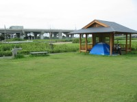
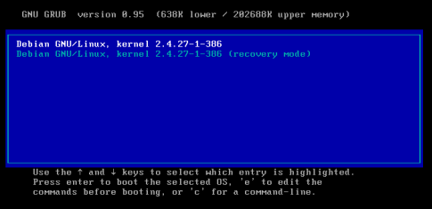
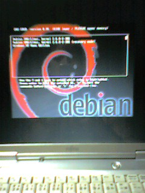

{kind=link}
{kind=link}


やべー！予定ブッキングしちゃったーーああ！！＿|￣|○
5日程家を空けます。
また来週。
ﾉｼ
あーもう、なんで俺はこんなんなんだ、、、＿|￣|○
ただいまっす。
9/21、無事帰ってきました。
おっしゃ。そいでは体験レポートとか、いってみよー。
出発前夜、なんか寝付けなくて、あまりよく眠れませんでした。
なので早めに出発しようと思ってたんですが、、、
結局9時起き○|￣|＿
しょっぱなからだめだなぁもう。
で、ですね。
鏡を覗いてみたらなんと、鼻血吹いていました、、、(･_･;)
そんなに興奮してたんか、俺。
ってかナチュラルに鼻血吹いたのなんて生まれて初めてだ。
いやまじで。
とりあえず当面の目標を設定する。
1,静岡県を目指そう。
2,高速道路など、有料と名の付く道路は使わないぞ計画
と、これだけ決めてうちを出発しました。
幸先いいぜ(何
10;00 針テラスに到着。
ここが俺んちから一番近いインターチェンジなのさ。
えー、これは高速ではありません。一般国道なのです。
いやほんとです。
自動車専用道路ってやつです。はい。
ここだけは使ってもいいとゆー自分ルール。
だって、ここ通らないと名古屋に行くだけで2日かかりますもん＿|￣|○
そんなタイムロスなんてやだ。
俺はもっと遠くに行きたいのだ。
こんな地元で、生活範囲でうろうろするだけで日が暮れるなんて、耐えられないのだ。
針テラスでバイク乗りの方と少しお話をしました。
俺の方から声かけたんですけどね。
だって
バイクに犬乗っけて旅してる人に出会ったのなんて初めてですもんっ
Shadowに犬ぽ専用のシートを取り付け、生意気にゴーグルまでしている犬、、、
たまらねえかわいさでしたよ。
あー写真撮っておけばよかった＿|￣|○
んで、鈴鹿から来た人から、静岡県天竜市あたりに無料のキャンプ場があるとゆー有益な情報をいただき、いざ出発。
あーライダー同士の挨拶ってたまらんですよね(*´д`)
14:25 三河安城のカムイさんの店に到着ｗ
「今日はバイトですか？」とメールで聞いたらちょうど休憩中だったようでっ
昼飯をごちそうになってしまいました(´∀`)
ありがとうカムイさん。また寄ります（ぇ
15:00 出発。
地図も見ずに23号線をひたすら走り、豊田市方面へ。
風景がだんだんツーリングっぽくなってきた。
街中ばっか走るのはしんどいからねぇ
16:00 YSP豊橋にてレイングローブ購入。
だって、西の空が真っ黒なんだもん(;ﾉд`)
雨か？雨が降るのか！？
18:00 豊橋市到着。暗くなってきた。
そろそろ寝るとこ探さないとやばいなー。
近くに浜名湖があるらしいんだけど、、、これどう見ても海だよなーどこだろうここ。
ちょっと本気で現在地がわからないので、少年自然の家とかゆー施設で点とを張れないか交渉する。
でも小学生団体とか、そーゆーのしか利用できないと言われちょいへこむ。
でもそのおっちゃんに「この道をまっすぐ行けば1号線にぶつかるから、そっから浜名湖いけるよー」
と教えてもらったのでひたすら進む。
もうひたすら。不器用なぐらいまっすぐ。
するとなんかSUZUKIの会社に行き着いてしまいまして○|￣|＿
ね、俺。
「1号線にぶつかる」って教えて貰ってるんだから注意して見てろよと。
道の駅汐見坂に到着。
うん、俺が浜名湖だと思っていたのはどうも遠州灘だったようで。
やべ。
今まで地図逆さに見てたよ(何
ちょこっと休憩して、下道をもっさり走っていたらば
芝生で！屋根付き！明かりとトイレと水道のある超素敵な公園を発見。
高速の高架下だから人もいないしねｂ
今晩はここにテントを張ることに決定☆
 今日の一枚。クリックで拡大しますよ。
うほほほ(*´∀`)快適じゃ
野宿さいこー
テント大好き！
21:00 おやすみー
つづく。
予定は未定、あくまでも予定。
えーお久しぶり、どうもTEVAです。
えー、タイトル通りです。
長期休暇を無理矢理いただきまして、やっとこさツーリングの準備が整いました。
本当はもうすでに出発していた予定だったんですが、、、
帰ってきたらなんとバイクが無かったんですね○|￣|＿
なぜだー！と親父に問うてみたところ、なんか前輪ブレーキが壊れていてから修理に出しちゃったそーな(･_･;)
うお、ちょ、前途多難ｗ
えー、まあそれで死ぬ確率が減ったと考えればありがたい事なわけで。
置いといて。
今日バイクが帰ってきたのでさっそく準備開始。
適当な木材を組み合わせた荷台を取り付け、かっこよさもくそもない、利便性のみを追求した緑のコンテナを取り付けて。
えー準備完了です。
さて、どこに行こうかね(´∀｀)
まず十二時さんのとこでしょー
んでクアのとこでしょー
式ぽにもメールしてみよっかなー
群馬erのとこに行くのもいいなー(地味省略
スナに会いたいなー…って、もう北海道行っちゃったね○|￣|＿
一歩遅かった…世界一ちくしょう
なんか晴れなのは明日だけとか…
知ったことかー！
寝るとこあるかなー？
知ったことかー！
飯はどうしようー？
知ったことかー！
最近ガソリン代高いよ？
知ったことかー！
どこまで行くの？
知ったことかー！
道わかるの？
知ったことかー！
僕富士山に行きたい。
うむ、名古屋で味噌カツ食ってからな。
俺は自由だ。
どこまでも行くぞ。
ほんじゃ、帰ってからのレポートをお楽しみに(何
行ってきます
ﾉｼ
よっしゃ出来たー！（（ヾ(´∀`)ﾉ
え、何がですか？
いやね、俺のPCはWinXPとDebianのデュアルブート環境だってのは御周知の通りなんですが
その選択方法は"grub"っつーブートローダーを使うんですわ。
つまりPCの電源を入れて数秒後に、WindowsかDebianかを選ぶわけ。
その様子はとゆーと、こんな感じです。

# これはGoogleからの拾い物ね。
えー、まあ殺風景なもんですわ。
これはこれでいい味出してるんだけど、ビモーに寂しい。
いや、だからといって半透明効果とかスムーズなアニメーションだとか
無駄な装飾をゴテゴテつけたいってわけじゃないんですがね。
えと、ちょっとした画像に差し替えるだけでかっこよくなるってんなら、それはとても素晴らしい事じゃないですか。
よーしならば、俺も挑戦してみよう！
ってことで！
、、、はや3ヶ月 ＿|￣|○
本やネットで調べた限りでは、/boot/grub/menu.lstに"splashimage=(hd0,*)/grub/xxx.xpm.gz"を書き込めってひたすら書いてあるだけなのでね、まーすぐ出来るだろう、と。
だけど何度試してみても、コンソール全体に線が入ってたり文字全部潰れちゃって表示されたりと散々。
なんかもう背景画像のぺの字も無い勢いなわけで。
menu.lstの書き込むラインが違うのか！？(hd0,*)の数字が違うのか！？いやでも(hd0,2)で合ってるだろーよ！え、もしかしてこのバージョンのgrubにはパッチが当たってないのか！？あ、違った、ちゃんと当たってる奴だ（’’むーなんで出来ないんだ。あーもう何回再起動したかわかんねーよおおおおもおおお
…そんな三ヶ月(･ω･)
んで、昨日何気なくgrubのマニュアルを読んでたんらですね。
"# update-grub"っつーコマンドがあるじゃないですか(ﾟｪﾟ )
え、、、まさかね。
いやいや、そんなまさかね。
あれ？そういや今まで一回も実行した事ないぞっと。
ど、どれどれ。
# update-grub ↓ っと、、、
おろ？エラーメッセージが。
えーと、ほう。"/boot/grub/splash.xpm.gz"が見つからないとな？
はっはっは馬鹿を言え。
そのディレクトリにはちゃんとやっつけ人生さんのところから頂いてきた"debianlogo-grub.xpm.gz"があるじゃないか(´ー`)
あ？ああ、もうわかったよ。同じ名前にしてやるよ。
# mv debianlogo-grub.xpm.gz splash.xpm.gz
んで
# update-grub
っと。
(; д) ﾟ ﾟ  ギャンッ
ほげー！出来たー！
うわ、ちょ、こんな簡単なんでいいんかい！ってかおいこんなの気付いてなきゃ一生出来なかったぞぉおおぶきー(`ω´#)
と、まあこんな感じで素敵ブートローダーが出来ましたよってお話です(･ω･ )
あーんでまー一回成功したら勢いも付くってもんわよ（？
えー、このgrub選択画面でcを押すとgrubから直接コマンドを送れるモードになるんですけどね。
そこに
grub> splashimage /boot/grub/xxx.xpm.gz
って打ち込むだけで簡単に画像の差し替えが出来る事にも気付いちゃいました。
うほほ
痒いところに手が届いた感覚は、いつ味わってもいいもんだのぉお(*´∀`)うぇっうぇ
よし、これでまたひとつPCを起動する楽しみが増えた。
次はどんな画像にしようかねぇ
えーと、金魚がいいかな(何
わかってるよっそんな画像無ぇって事ぐらいよー！
無いからNivisちゃんからもらったバトンをばやっていくわよっ（何
ただいまです。
そしてお久しぶりですこんばんは。
時々がばっと怠けますどうもTEVAです。
前回、金魚すくいに行って次の日にはキャンプに行ったきり、帰ってこなくなっていたナマケモノですわ。
なんだろね、この糸の切れた風船状態な性格。
えー金魚すくいですが、とても楽しゅうございました。
まあ一匹しかすくえなくて、予選落ちだったんですけどね。
順番が最初の方だったんで金魚が元気丸出しだったからすくいにくかった、、、とだけ言い訳しておく。
ちなみに一緒に行った母は、当たり前みたいに四匹すくって予選通過していました。＿|￣|○
すげーな母よ。
言うだけあるわー
まあ次の日はキャンプに行くため、決勝戦は辞退して、、、
本当の目的である、ポイが二枚もらえて一回50円の金魚すくいをば。
1000円分楽しんできました(何
内訳… 母：800円 俺：200円
持ち帰ったちびっこい金魚達は、うちの水槽で元気に泳ぎまわっております。
最近は環境にも慣れたみたいで、頻繁に餌をねだる様にもなりました。
それがまたかわいーのだ(*´д`)
おなかポンポコリンになるまで食べる様は、とても癒されます。
ま、水槽緑色してるんだけどね（ぉ